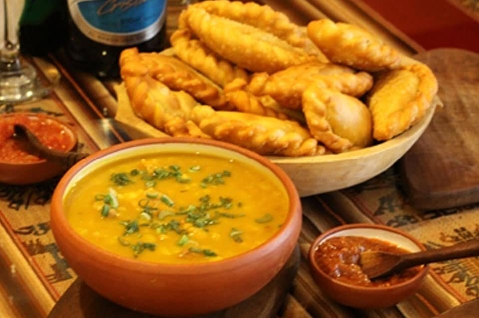
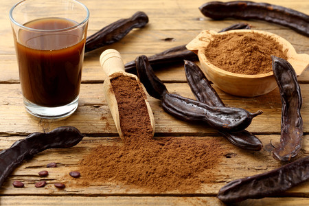
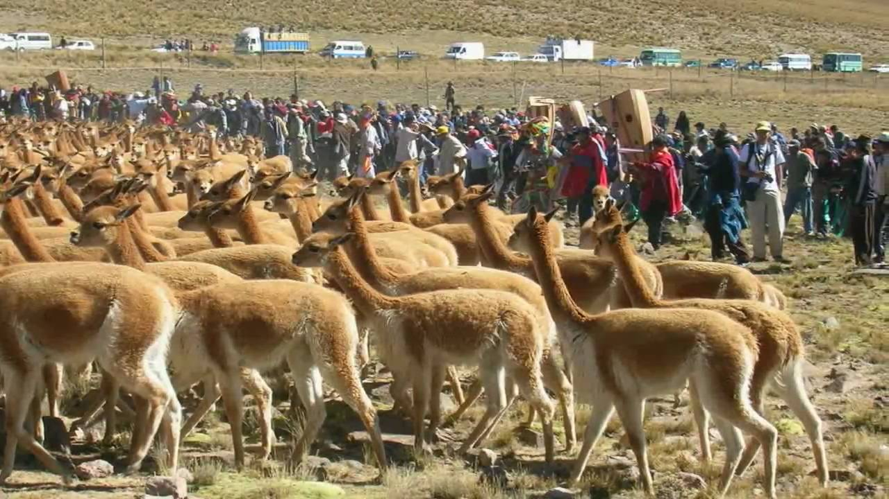
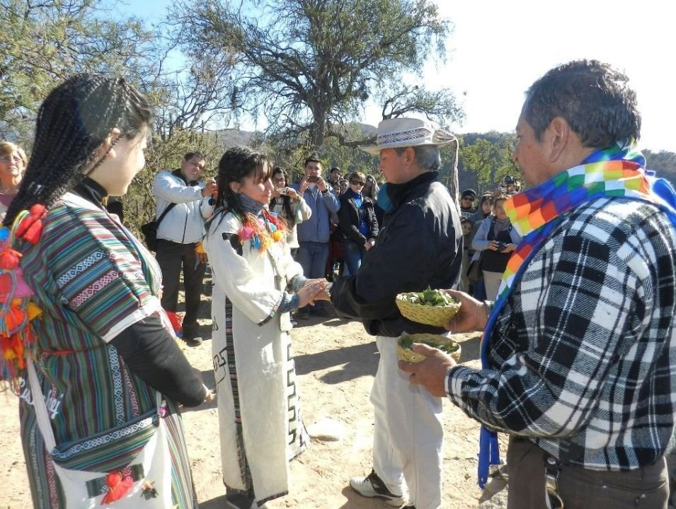
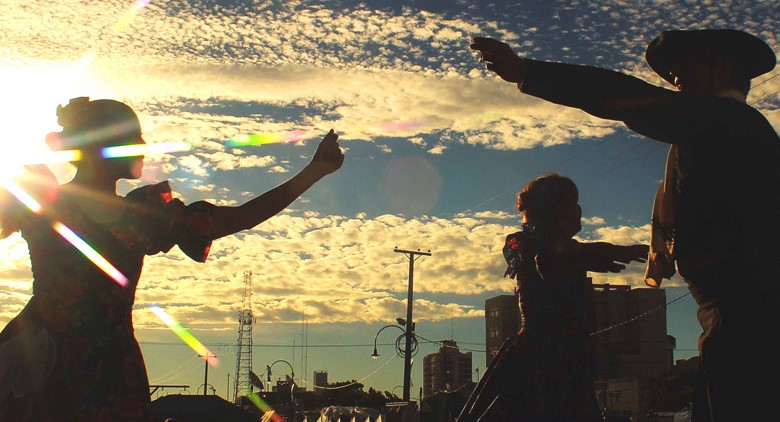
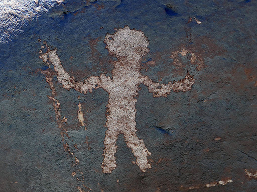

¡Hola!
Mi nombre es Lourdes y estoy formandome como desarrolladora web front end. Este es mi primer proyecto realizado con Booststrap para lo cual decidí crear una landing page con la temática de mi provincia natal: Catamarca.
Acá encontrarás información de su historia, curiosidades, comidas típicas y costumbres, también sobre los lugares que podes ir a visitar y hacer turismo.
Te invito que conozcas un poco mis pagos, y si te gustó el lugar, ¡será bienvenida tu visita!
Historia
La historia de mi provincia tiene un inicio mucho anterior al de la colonización, ya que en ella hubo asentamientos de poblaciones humanas desde el año 3000 a.C. según datan los registros arqueológicos. En ésta sección voy a compartir con Uds. un resúmen de su historia contando sus fundaciones y hechos más destacados.
Curiosidades
En esta sección quiero compartiles curiosidades y datos de interés: comidas, bailes, costumbres y por qué no? algunas leyendas de mi pago.
Comidas
La rica diversidad de productos y sabores de la gastronomía catamarqueña incluye entre sus mejores exponentes los tamales, la tortilla, tulpo, locro, matambre relleno con verduras, quesillo, poliada, jugote, dulce de zapallo y la exquisita empanada, que lleva carne cortada con cuchillo, papa, cebolla, ajo picado, grasa de pella, pasas de uva sin semilla, aceitunas verdes picadas, sal, pimienta, ají molido y huevo.
En cuanto a las bebidas, se destacan la aloja (una especie de cerveza de algarroba blanca), la añapa (jugo de algarroba blanca o negra molida con agua y azúcar) y el arrope, un refrescante jugo de uva y tuna que, en algunos casos, se prepara con chañar o mistol.
Bebidas
Esquila de vicuñas
En Catamarca, la recolección de lana es parte de una tradición ancestral llamada Chaku. Antes de empezar los participantes llevan adelante un ritual que se llama Corpachada. Una vez que se ha extraído la lana, los animales son liberados y vuelven a su vida libre y silvestre. Quienes participaron de la esquirla del Chaku realizan un pozo en la tierra muy grande para corpachar. Esto quiere decir darle de comer y beber a la tierra en agradecimiento a los recursos que ha ofrecido a la comunidad.
El chuscharuto o "corte del primer cabello" es una festividad tradicional en la cual se realiza la primera presentación de la hija o hijo de una familia a la comunidad, bajo las bendiciones de la Pachamama. Los invitados realizan el primer corte de cabello a la niña o niño entregando en retribución dinero a la familia, el que se destina a los gastos de la crianza del menor.
El Chuscharuto
Zambas y chacareras
Catamarca es tierra de inspiración para escritores y poetas. Desde su mitica zamba "Paisaje de Catamarca" de Polo Gimenez, la provincia vuelve a ser evocada en chacareras, gatos, zambas, vidalitas y cuecas algunas de ellas son: Coplas del valle, Belén en los carnavales, Tiempo i mama, Zamba de los mineros, La catamarqueñita, Catamarca me conoce, Zamba de las Juntas, Camino a El Rodeo, Recuerdos del valle entre otras.
El duende, la mulánima, la virgen, la salamanca, los espantos son parte de los mitos y leyendas que persisten de generación en generación y se fueron forjando bajo el sincretismo entre las creencias de originarios y españoles. Son cuentos entretenidos de relatos fantásticos en donde se explican el origen de distintos elementos de la naturaleza o simplemente buscan una explicación a sucesos que hoy en dia ya no son un misterio.
Mitos y leyendas
Turismo
Ahora quiero mostrarte algunos de los lugares que podes recorrer cuando visites Catamarca. La provincia cuenta con un paisaje rico y variado, el segundo pico más alto de Argentina, volcanes y un recorrido arqueológico único.
Cuesta del Portezuelo
La cuesta del Portezuelo es un camino sinuoso ubicado en el departamento Valle Viejo y es uno de los atractivos turísticos más visitados de la provincia, debido a su alto valor paisajístico y a su cercanía a la ciudad capital. Desde los puntos más elevados, se practica aladeltismo y parapente.
Fiesta del Poncho
Es considerada como la “Expresión cultural más importante de Catamarca”, se realizada en las vacaciones de Julio en la Capital, en la misma se destaca la muestra artesanal que cuenta con la presencia de artesanos de todo el país que ofrecen sus trabajos plenos de calidad.
Ojos del Salado
Ubicado al oeste de Fiambalá con una altura de 6891,3 m.s.n.m. es considerado el volcán más alto del mundo y es el segundo pico más alto de Argentina. Junto a él se encuentra el monte Pissis, con 1 km menos de altura, que si bien recibe el nombre de monte también se trata de un volcán.
Campo de Piedra Pómez
Se encuentra en el departamento Antofagasta de la Sierra y su nombre describe el paisaje caracterizado por la extensa acumulación de piedra pómez, que luego de milenios de procesos de erosión adquirió la morfología que hoy presenta. Quienes lo conocen afirman que es un paisaje de otro planeta.
El Shincal de Quimivil
Es una ciudad precolombina incaica que se encuentra en el departamento de Belén y es uno de los espacios más significativos de la presencia de los Incas en el Noroeste argentino. El área está compuesta por diversas estructuras entre las cuales se encuentra el ushnu o plataforma ceremonial cuadrangular.
Termas de Fiambalá
Es un complejo de aguas termales ubicadas en el departamenti Tinogasta. Posee un total de 14 piletones en pendiente en los que se vierten casi naturalmente aguas termales de diferente temperatura. Las aguaste termales son recomendadas para curar enfermedades como artritis, artrosis, psoriasis, reumatismos, etc.